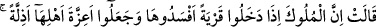
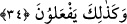
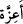
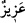

iyi bilebilir.
Sultanın görüşünün aksine görüş bildirmek
Kendi ölümüne ferman vermektir
Belkıs, onların zâtî ve ârızî güç iddiâ ederek savaşa meyilli olduklarını ve doğruluk
çizgisinden saptıklarını hissedince, Süleyman (a.s.)’ın durumundan habersiz olduklarını
gösteren sözlerinin yanlışlığını ortaya koymaya başladı.
Kâşifî der ki: “Belkıs şöyle dedi: Bizim için iyi olan savaş değildir. Çünkü savaş iki
ihtimallidir. Eğer onlar galip gelecek olsalar, memleketimiz ve mallarımız telef olur.”
Nitekim Allah Teâlâ şöyle buyurur:
34. Melike: “Hükümdarlar bir memlekete girdiler mi, orayı perişan ederler ve
halkının ulularını alçaltırlar. (Herhalde) onlar da böyle yapacaklardır.” dedi.
“Melike: “Hükümdarlar” savaşmak ve harp etmek üzere memleketlerden “bir
memlekete” ve şehirlerden bir şehre “girdiler mi,” binalarını tahrip ederek ve orada
bulunan malları telef ederek “orayı perişan ederler ve halkının ulularını” öldürerek,
esir alarak, sürerek ve bunlardan başka türlü hor ve hakir kılma yollarıyla “alçaltırlar.”
Hor ve değersiz kılarlar.
“
” kelimesi, üstün, gâlib, ulu ve şerefli kimse anlamındaki “
”in çoğuludur. İzzet
sâhibi olmak, insanın yenilmesine mâni olan bir hâldir.
“(Herhalde) onlar da böyle yapacaklardır.” dedi.”
Bu cümle de kendisinden öncesini te’kid ve bunun hükümdarların süregelen âdetleri
olduğunu ifâdedir. Bu durumda Belkıs’ın sözünün devamıdır. Allah Teâlâ tarafından
onun sözünü tasdik anlamında olması da mümkündür.
Burada işâret vardır ki akıl sâhibi, düşmanları uygun bir yolla savuşturmak mümkün
olduğu sürece, mecbur kalması hâriç muhârebe ve savaş yapmak sûretiyle kendisini
helâk olma tehlikesine atmaz.
Bazıları demiştir ki: “Sulh/barış ve kıskançlıkta aşırılığı terk etmek liderlikten ileri
gelir.”
Diğer bir işâret de şudur: “Rabbânî sıfatlar hükümdarları, tecellî ile insânî şahıs
memleketine girdikleri zaman insânî ve hayvânî tabîatı ifsâd etmek sûretiyle orayı
perişan ederler. Orasının halkının uluları olan nefs-i emmâre ve sıfatlarını, tecellînin